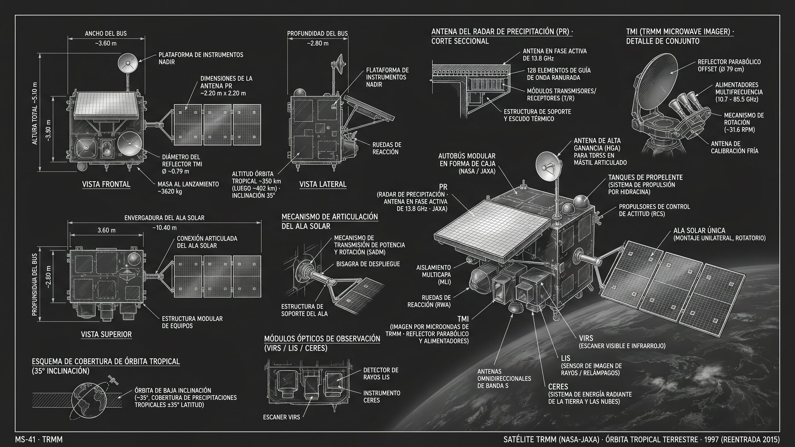

TRMM

Llevó a la órbita el primer radar de lluvia y enseñó el interior de las tormentas en tres dimensiones. Iba a durar tres años y trabajó diecisiete, hasta que se quedó sin combustible.
La NASA y la JAXA cerraron las operaciones científicas el 8 de abril de 2015 al agotarse el combustible; la reentrada no controlada ocurrió el 15 de junio de 2015 a las 23:55 EDT sobre el Índico Sur.. Personas: Scott Braun, George Huffman, Stephen Bilanow
Lo que hizo
- Lluvia en 3D — El primer radar de precipitación en órbita convirtió la lluvia en imágenes de volumen: por primera vez se vio la estructura interna de las tormentas, capa a capa.
- Casi en directo — Pasó de dar medias mensuales en celdas de unos 500 km a estimaciones de lluvia cada tres horas, casi en tiempo real, y sus datos entraron en los pronósticos de ciclones del National Hurricane Center.
- El final — Se quedó sin combustible y la NASA y la JAXA cerraron la ciencia el 8 de abril de 2015. El 15 de junio se desintegró sobre el Índico Sur; su relevo, GPM, sigue la serie.
Modelo 3D, chat y cómic, en tres idiomas
Fuentes
- gpm.nasa.gov/missions/trmm
- gpm.nasa.gov/gpm-news/trmm-spacecraft-re-enters-over-tropics
- www.nasa.gov/technology/the-trmm-rainfall-mission-comes-to-an-end-after-17-years/
Ver el índice completo · Proyecto del NASA Space Apps Challenge 2026. Contenido con fuentes citadas.